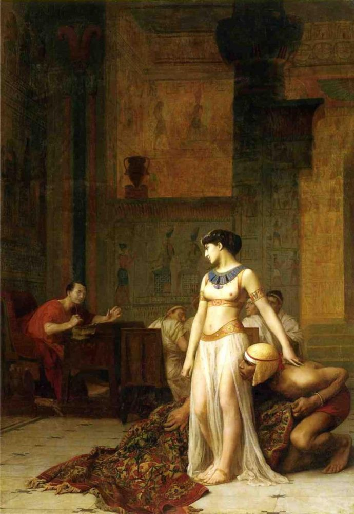

1'Antik Mısır' tek bir dönem değildir
Antik Mısır deyince aklımıza hep aynı görüntüler gelir: piramitler, firavunlar, mumyalar ve Kleopatra. Bu yüzden hepsini aynı döneme ait sanırız. Oysa antik Mısır medeniyeti yaklaşık 3.000 yıl sürdü. Bu, bugünden Truva Savaşı'na kadar geçen süreden bile uzundur.
2Piramitler çok çok eski
Giza'daki Büyük Piramit, firavun Keops (Mısırca adıyla Khufu) için yaklaşık MÖ 2560'ta inşa edildi. Yaklaşık 146 metre yüksekliğiyle, yaklaşık 3.800 yıl boyunca insan yapımı en yüksek yapı olarak kaldı.
Antik dünyanın yedi harikasından bugün hâlâ ayakta kalan tek yapı da Büyük Piramit'tir.

3Kleopatra'nın zamanı
Mısır'ın son firavunu olarak bilinen Kleopatra VII, MÖ 69'da doğdu ve MÖ 30'da öldü. Yani Büyük Piramit yapıldığında Kleopatra'nın doğmasına daha yaklaşık 2.500 yıl vardı.
Kleopatra'nın ölümünden 1969'daki Apollo 11 Ay inişine kadar ise yaklaşık 2.000 yıl geçti. Sonuç olarak Kleopatra, zaman çizelgesinde piramitlerin inşasından çok Ay'a inişe daha yakındı.
Yani Kleopatra için Büyük Piramit, bizim için Roma kalıntılarının olduğundan da eski, 'antik' bir yapıydı. Hatta onun zamanında piramitleri görmek için Mısır'a gelen Yunan ve Romalı 'turistler' vardı.
4Kleopatra Mısırlı mıydı?
Kleopatra, Mısır'ı yöneten Ptolemaios hanedanındandı. Bu hanedan, Büyük İskender'in generallerinden biri olan Ptolemaios'un soyundan gelen Makedonyalı Yunanlardan oluşuyordu. İskender'in ölümünden sonra Mısır'ı yaklaşık 300 yıl yönettiler.
Kleopatra, ailesinde Mısır dilini öğrenen ilk hükümdar olarak bilinir. Antik kaynaklara göre birçok dil konuşuyordu. Onun ölümüyle Mısır, Roma İmparatorluğu'nun bir eyaleti oldu.
💡 Biliyor muydun?
- Tyrannosaurus rex, Stegosaurus'tan çok bizim zamanımıza yakın yaşadı. İki dinozor arasında yaklaşık 80 milyon yıl var.
- Büyük Piramit yaklaşık 2,3 milyon taş bloktan oluşur.
- Görseldeki 'Kleopatra ve Sezar' tablosu 1866'da yapıldı. Ressamın hayal gücünün ürünüdür, gerçek bir sahneyi göstermez.
✅ Kaynaklar
📷 Görseller
- Kapak: Douwe C. van der Zee · CC BY-SA 4.0 · Wikimedia Commons
- Jean-Léon Gérôme'un 1866 tarihli 'Kleopatra ve Sezar' tablosu: Jean-Léon Gérôme · Public domain · Wikimedia Commons